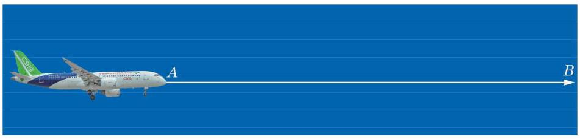
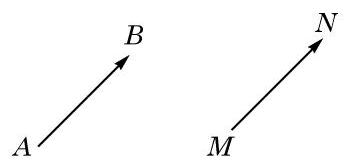
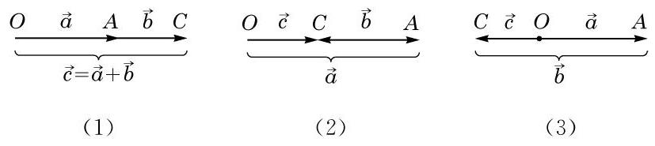
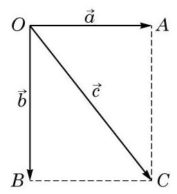
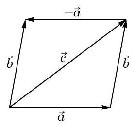
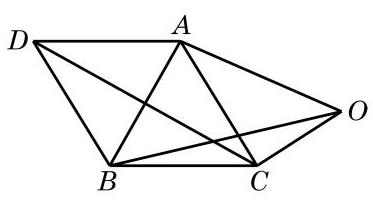
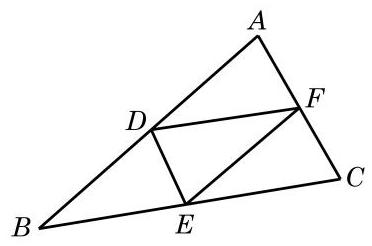
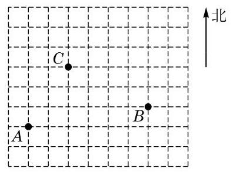

例题 01
例 1 如图 8-1-4,在等边三角形 中, 分别是边 的中点. 写出图中与向量 平行和相等的向量.

图 8-1-4
学生阅读版 / 沪教版高中数学
必修第二册
第8章平面向量 · 保留教材主线与原题
平面向量
在现实世界和科学问题中，常常会见到既有大小又有方向的量, 如位移、速度、力等. 数学中的“向量”概念就是从中抽象出来的. 向量不仅有丰富的几何内涵，向量及其线性运算与数量积运算还构成了精致且有广泛应用的代数结构, 可把有关的几何问题简便地转化为相应代数问题来处理. 本章只讨论平面上的向量, 选择性必修课程第 3 章还将把这一讨论推广到 (三维)空间中，至于更一般性的推广则是大学线性代数课程的核心内容.
高中阶段向量的学习重在为解决代数、几何、三角及物理等领域中的问题提供一个简捷有效的工具.
从实际的量，到可以平移的数学对象
1 向量的概念

图 8-1-1
图 8-1-1 展示了国产大飞机 C919 在蓝天翱翔的雄姿. 飞机从 飞行到 . 它的位移是一个既有大小又有方向的量,它的大小是 间的距离,方向由 到 .
像“一点相对于另一点的位移”这种既有大小又有方向的量叫做向量 (vector). 准确地说, 一个向量由两个要素定义, 一是它的大小(一个非负实数)，一是它的方向.
在研究向量的性质并定义与向量相关的各种运算时, 常常把向量用有向线段 (directed line-segment, 即指定了方向的线段) 表示出来, 线段的长度就是向量的大小, 线段的方向表示向量的方向. 我们也直接把表示向量的有向线段称作向量, 有向线段的起点称为向量的起点，有向线段的终点称为向量的终点. 本章只研究在一个平面上的向量, 就是要求所涉及的所有向量都能用同一个平面上的有向线段表示出来.
向量通常用上方加箭头的小写字母表示，如 ，读作向量 . 向量也可以用上方加箭头的两个大写字母表示，如 ，读作向量 ,其中 是向量的起点， 是向量的终点.
在讨论向量时，仅仅有数值(可以是任何实数)而没有方向的量称为数量 (scalar), 又称为 “标量”.
除了位移，向量还有很多现实的原型. 例如，“力”就是一个典型的例子.
图 8-1-2 是由若干个单位正方形组成的网格, 表示大小为 2 个单位、方向由 到 的向量; 表示大小为 个单位、 方向由 到 的向量.
“向量”又称为“矢量”, 在物理学中较常使用.
物理学中所研究的力有大小、方向和作用点三要素，我们研究的向量舍弃了作用点这一要素, 这种向量叫做自由向量.

图 8-1-2
请同学们描述图 8-1-2 中向量 、 的大小与方向.
向量 的大小叫做 的模 (modulus)，记作 . 模为 1 的向量叫做单位向量(unit vector).
规定模为 0 的向量叫做零向量(zero vector),记作 ,可认为它具有任意方向.
如果两个非零向量所在的直线平行或者重合, 那么称这两个向量平行. 我们用记号 表示向量 与 平行.

图 8-1-3
由于约定了零向量具有任意方向, 因此它平行于任意向量. 这样, 根据向量相等的定义, 零向量都是相等的.
例 1 如图 8-1-4,在等边三角形 中, 分别是边 的中点. 写出图中与向量 平行和相等的向量.
图 8-1-4
请在图 8-1-4 中找出与 相等的向量.
如果一对平行向量 与 具有相等的模但方向相反,那么称它们互为负向量,或者称 为 的负向量,记作 . 图 8-1-4中的向量 与 就是互为负向量. 一般地,对于平面上任意两点 ,均有 .
例 2 在图 8-1-4 中，写出向量 的负向量.
图 8-1-4
尽管可以画出一个向量的许多负向量，但由于它们彼此都相等, 因此一个向量的负向量在相等的意义下是唯一的.
(1)密度； (2)体积； (3)速度； (4)能量;
(5) 电阻; (6)加速度； (7)功; (8) 力矩.
你能找出更多向量的例子吗?

(第 2 题)
(1)与 相等的向量； (2)与 平行的向量；
(3)与 模相等的向量； (4) 的负向量.

(第 3 题)
让不同方向的量进入同一套运算
在物理学习中, 我们已经知道了当不在同一方向上的两个力 同时作用于一个物体时,它们的合力是以 为相邻两边的平行四边形 对角线 所表示的力 (图 8-1-5).

图 8-1-5
一般向量的加法也采用上述求合力的方法. 设给定两个不平行的向量 、 ，如图 8-1-6，如果以点 为起点，分别作 ,那么以 为邻边的平行四边形 的对角线所表示的向量 就定义为向量 与 的和,记作 . 求向量和的运算,叫做向量的加法 (addition of vectors). 我们把这种作向量和的方法叫做向量加法的平行四边形法则 (parallelogram law).

图 8-1-6

图 8-1-7
由于平行四边形对边平行且相等,有 ,因此求向量 与 的和 ,在 中就可以实现: 如图8-1-7, 若以 为起点作向量 ，再以 为起点作向量 ，则连接起点 与终点 得到向量 ,它就是 两向量的和 . 我们把这种作向量和的方法叫做向量加法的三角形法则.
向量 与 满足 时 (包括 中出现零向量的情况), 无法使用平行四边形法则, 但上述三角形法则的步骤 (即若从一点 出发作向量 ，再以 为起点作向量 ，则向量 )仍然可以用于作出点 ,使得 ,只不过此时 不存在,只剩下一条直线上三条首尾相接、互相重叠的线段了. 图 8-1-8 的三幅图分别给出了 与 方向相同、 与 方向相反且 和 与 方向相反且 三种情况的图示(后两种情况当 时是一致的，此时 两点重合,从而 ).

图 8-1-8
特别地, 当三个向量中出现一个零向量, 就得出
由结合律,我们常常把 与 都简记为 .
根据平行四边形法则, 比较容易验证向量加法的交换律, 而结合律的证明见下面的例 3.
例 3 已知 和 是平面上任意给定的向量,求证:
例 4 一物体受水平方向 6 N 和铅垂方向 8 N 的两个力的作用，求合力的大小以及合力与铅垂方向偏离的角度. (结果精确到

图 8-1-9
我们现在考虑向量的减法.
就像数的运算中减法是加法的逆运算一样,向量的减法也是作为向量加法的逆运算来定义的. 这就是说,如果已知向量 ,那么向量 叫做向量 与向量 的差,记作 . 求向量差的运算, 叫做向量的减法.

图 8-1-10
只要用向量加法的交换律、结合律以及 的事实, 就可以直接验证这一公式:
当 与 不平行时,我们还可以借助如图 8-1-10 所示的平行四边形得出这一公式: 由平行四边形右下方的三角形知 ,即 ,而由左上方的三角形知 . 这就得到要证明的结果 .
例 5 已知 是边长为 1 的等边三角形,点 是 所在平面上的任意一点. 求向量 的模.

图 8-1-11
(1) ___； (2)
用一个系数，统一表达伸缩与反向
如图 8-1-12, 某科考船以 12 海里/时的速度匀速沿东北方向航行，中午 12 时船的位置在点 处. 请描述下午 3 时和下午 4 时 30 分该船与点 的相对位置.
图 8-1-12
同学们一定很容易给出答案:该船下午 3 时在点 东北方向的 36 海里处,而下午 4 时 30 分在点 东北方向的 54 海里处. 同学们的计算可能是直接把速度的数值乘时间, 忽略了速度和位移都是向量这一事实. 这样把向量问题简化为数量问题处理, 碰到复杂问题(如多个方向位移的合成)时就可能力不从心了. 如果回到向量记号,用 表示科考船的速度,即东北方向 12 海里/时, 那么该船下午 3 时和 4 时 30 分相对于 的位移向量可以直接表示为 和 ，这里的 3 与 4.5 是时间，它们只是数量(实数). 为了在向量空间中解释这种乘积, 我们要先定义实数与向量的乘法.
暂不考虑有关量的单位,采用实数与向量乘积的记号,下午 3 时和 4 时 30 分科考船相对于 的位移向量就可写为 和 ，再考虑有关量的单位，由于 3 及 4.5 的单位是小时，速度的单位是海里/时,从而下午 3 时和 4 时 30 分科考船在点 东北方向 36 海里处和 54 海里处. 我们还可以把上午 9 时科考船相对于 的位移向量表示成(-3) ，即点 西南方向 36 海里处.
数学上实数与向量的乘积只是简单地理解为原向量的倍数. 但在实际问题中, 向量和实数都有可能被赋予特定的意义和单位, 如上例中的速度、位移和时间, 它们的乘积就可能有更复杂的含义.
容易看出,当 是一个正整数时, 就是 个 相加. 例如,当 时, ; 当 时, .
当 时, 与向量 的模相等但方向相反,故 是向量 的负向量,即 . 据此,再用下文所示运算律中的第二个公式,我们可以更一般地把 记为 ,它是向量 的负向量.
根据实数与向量的乘积的定义，可知 是与 平行的向量. 反之,如果向量 与非零向量 平行,那么一定存在实数 ,使得 . 当向量 和 同向时, ; 当向量 和 反向时, . 故
同学们可以验证实数与向量的乘法满足下面的运算律:
向量的加法、减法以及实数与向量的乘法, 统称为向量的线性运算(linear operation). 从一个或几个向量出发, 通过线性运算得到的新向量称为原来那些向量的线性组合 (linear combination). 例如, 就是向量 的一个线性组合.
例 6 化简下列向量线性运算:
(1) ；
(2) ；
(3) .
例 7 已知向量 、 、 满足 ,试用 表示 .
例 8 如图 8-1-13,在 中, 是 的中点, 是 延长线上一点,且 .
(1)用向量 、 表示 ；
(2)用向量 、 表示 .

图 8-1-13
(1) ； (2) ；
(3) .
(1) ； (2) ；
(3) .

(第 3 题)
保留教材A、B组顺序，不另行分级或改编
(1)向量 的起点在坐标原点，与 轴正方向的夹角为 且 ；
(2)向量 的模为 4，方向与 轴的正方向反向；
(3)向量 的方向与 轴的正方向同向，模为 2 .
(1)长度相等的向量均为相等向量;
(2)给定向量 ，若 ，则 ；
(3)若 为平行四边形，则必有 ；
(4)若平面上四点 、 、 、 使 ，则 .
(1)与向量 相等的向量；
(2)向量 的负向量；
(3)与向量 平行的向量.

(第 4 题)
(1) ； (2) 和 .

(第 5 题)
(1) ； (2) ；
(3) .
(1) ； (2) ； (3) ； (4) .
(1) ; (2) .
(1) ；
(2) ；
(3) .
(1) ； (2) .
(1)正北方向且模为 2 的向量 ；
(2)模为 、方向为北偏西 的向量 ；
(3)(2)中向量 的负向量.

(第 1 题)
(1) ；
(2) ；
(3) .
(1) 和 ； (2) 和 .

(第 3 题)
(1) ；
(2) .
(1)若存在一个 使 ,则 ；
(2)对于任意给定的实数 和向量 、 ，均有 ；
(3)对于任意给定的实数 和向量 ,均有 .